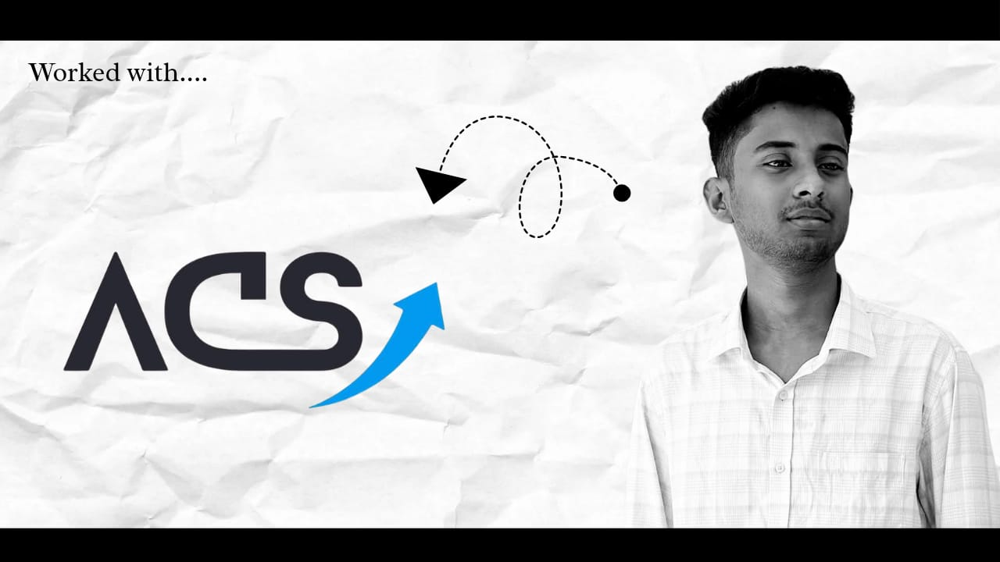
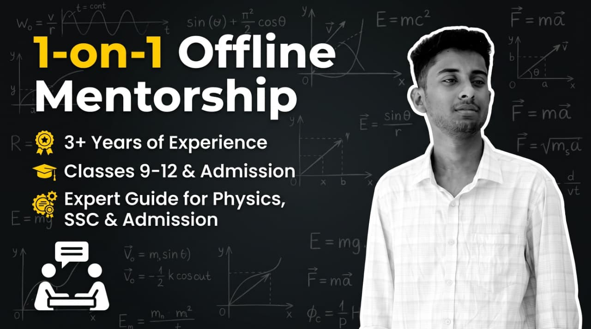
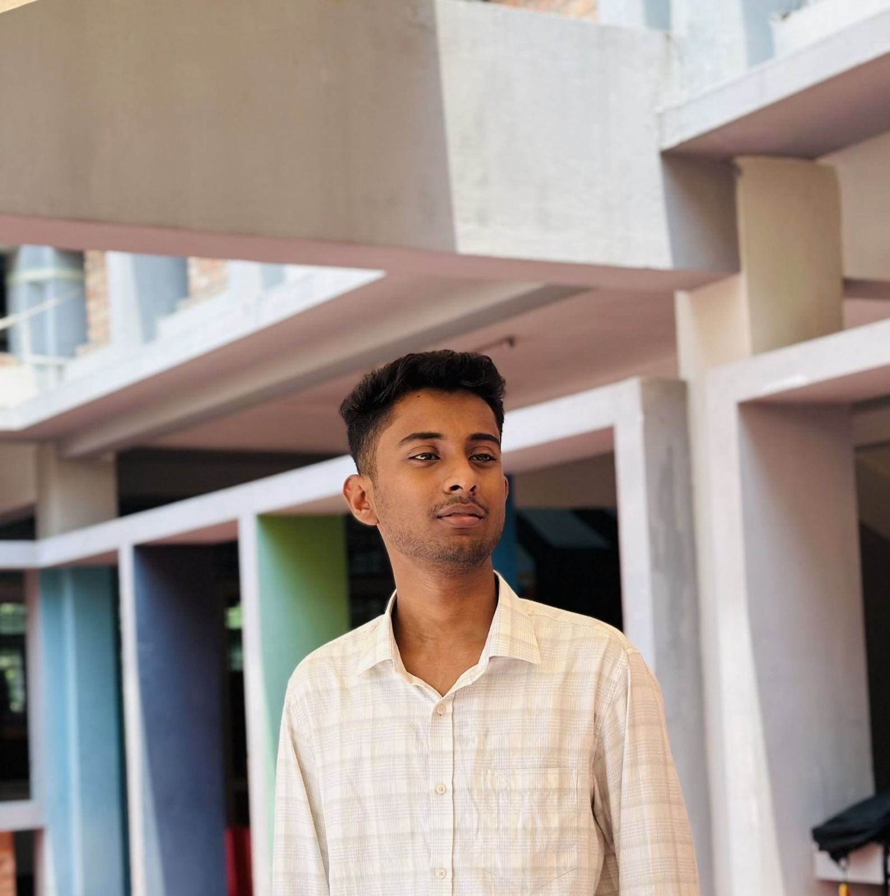
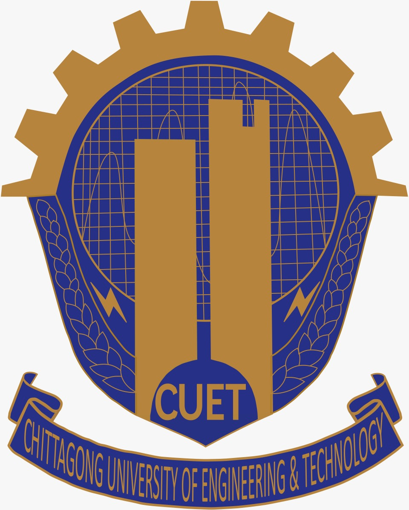
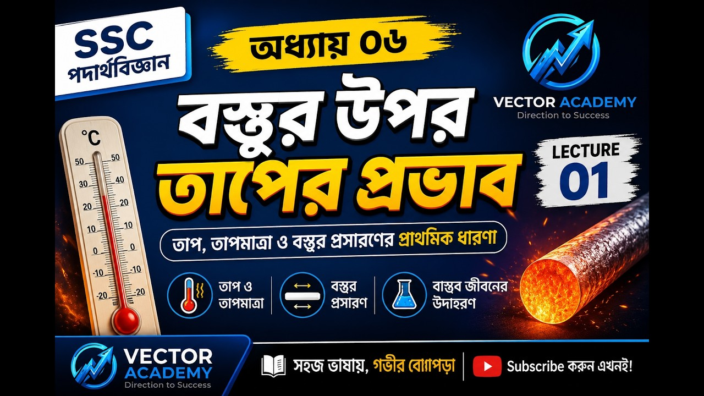
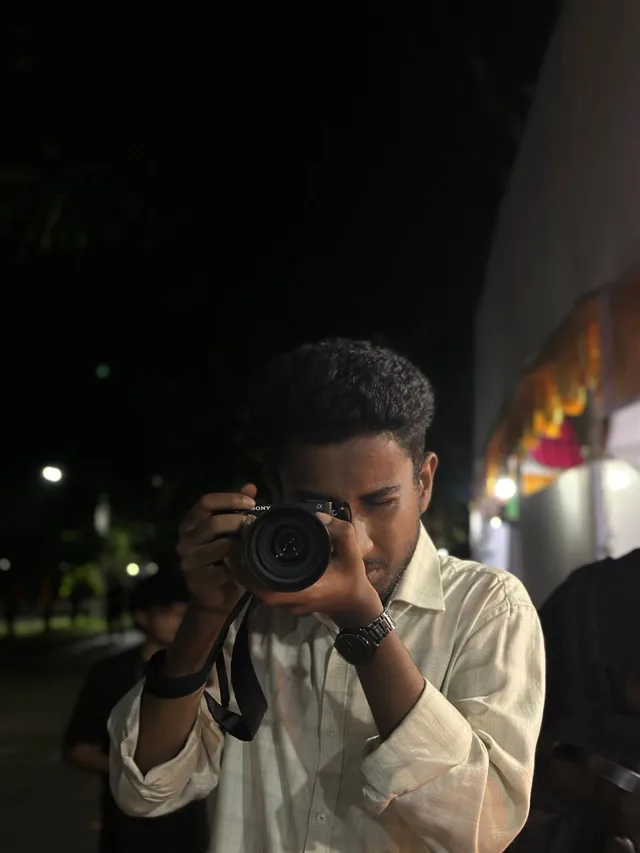

01
Teaching
QnA Teacher
Udvash Academic & Admission Care
Currently teaching QnA for the Medical Physical Department and SSC.
Read about the roleUrban & Regional Planning / CUET
Student of Urban & Regional Planning
Designer · Educator
year of Urban & Regional Planning at CUET
years teaching classes 9–12
ACI Student Chapter competition wins as a team
I’m learning to use spatial data to read patterns in the places people live.
Explore my planning skillsI’m Farhan Sadique, a second-year Urban & Regional Planning student at CUET.
I’m interested in urban planning, spatial data analysis, and design. Alongside my studies, I teach and mentor students.
Religion · Islam
See my educationI teach and tutor, evaluate exam scripts, and help coordinate a free school near CUET.
Udvash Academic & Admission Care
Currently teaching QnA for the Medical Physical Department and SSC.
Read about the role

Three years of teaching experience with students in classes 9–12.
Read about the roleBeyond the classroom
Volunteer Coordinator & Instructor · Prodip School My SSC Physics classes ACI Student Chapter competitions Urban & Regional Planning at CUETI teach QnA at Udvash, evaluate exam scripts at the Chittagong branch of ACS Achieve, and have three years of experience teaching classes 9–12.
Explore a skill area and see how I apply it.
Spatial analysis & data
ArcGIS Pro (currently practicing) · SPSS
Canva (proficient) · Adobe Illustrator · Basic video editing
Microsoft Excel · Microsoft Word
My extracurricular experience at CUET includes competing as part of a team.
My team won two recent competitions organized by the ACI Student Chapter at CUET.
Competition participation
I participated in the previous Concrete Competition at CUET.
See competition photosTeaching experience
I tutor students in classes 9–12 alongside my planning studies.
Through tutoring and QnA teaching, I help students work through their questions.
See my teaching experienceChittagong University of Engineering & Technology (CUET)

Currently in second year

UniversityDepartment of Urban and Regional Planning
My classes on Vector Academy, from states of matter and pressure to the effects of heat.
পদার্থের অবস্থা ও চাপ
Watch on YouTube
Vector Academyবস্তুর উপর তাপের প্রভাব
Watch on YouTubeLandscapes, architecture, and everyday scenes, alongside campus life at CUET.

Get in touch about urban planning, design, or teaching.
sadik.tassen12@gmail.com